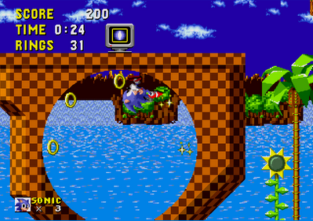
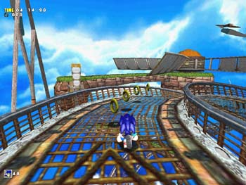

第３回 ソニックの動きとカメラ その１
2008年12月18日
みなさんこんにちは！
『ソニック ワールドアドベンチャー』 ディレクターの橋本です。
今回は『ソニック ワールドアドベンチャー（ＳＷＡ）』の特徴の中から
「ソニックの動きとカメラ」
について解説します。
一口に「ソニック・ザ・ヘッジホッグ」と言っても過去を振り返ると様々なスタイルのゲームが存在します。セガが９０年代に出していたメガドライブ（海外名ジェネシス）というＴＶゲーム機で初代ソニックは誕生しましたが、初代ソニックは当時のハードの特性を生かして、画面の右方向に向かって走っていくスタイルのアクションゲームでした。ジャンルで言えば「サイドスクロール」タイプのゲームです。（以後２Ｄソニックと呼びます。）
そしてＴＶゲーム機の性能も上がり、セガのドリームキャストというＴＶゲーム機で登場した『ソニック アドベンチャー』で始めてソニックは３次元（３Ｄ）空間を奥に手前に右に左に自由に移動するタイプのゲームになります。以後はこの３Ｄタイプのソニック（３Ｄソニック）が主流なのですが、任天堂Ｗｉｉで発売された『ソニックと秘密のリング』というゲームでは３Ｄ空間内にレールのような「パス」が設定されて、そのパスの上をソニックが走行するというスタイルでした。
他にも上空斜め上から見下ろしたスタイルのゲームなど、ソニックにもいろいろなスタイルがあるのです。
私が今回ＳＷＡの基本コンセプトを考える際に重視したのがこの「ソニックの動きとカメラのスタイル」でした。このスタイルをどう設計するかが、ソニック・ザ・ヘッジホッグの超音速アクションゲームとしての特性を伸ばせるか伸ばせないかの大きな分岐点になると考えていました。
アナログスティックを右に倒したらソニックが画面の中をどこに向かって動き出すのか、カメラはどうそれを追いかけていくのか、そういうルールでゲーム内容がガラリと変わるのです。
そして私は、このＳＷＡで
「３Ｄソニックの最高峰を目指すべく、
『ソニックの動きとカメラのスタイル』の
ひとつの答えを導き出そう。」
というつもりでいました。
では、どうやって「３Ｄソニック決定版」をつくるのか。
私はいくつかの考察をしました。（つづく）
★★★ お知らせ ★★★
さて、本日は『ソニック ワールドアドベンチャー Ｗｉｉ版』の発売日です！
Ｗｉｉのヌンチャクとリモコンの特徴を生かしたアクションゲームになっていますので
是非遊んでみてくださいね！
そして、Ｗｉｉ版の発売である本日、新しいブログが開始されました！
ＳＷＡの開発女子スタッフによる「ハミだしブログ」と言います。
私の「ディレクターブログ」が比較的カッチリした内容をお届けするのに対し、
「ハミダシブログ」はゆるゆるとした内容で進行していきますので、
どちらも楽しんでください！
なんでもプレゼント企画もあるらしいですから要チェックですよ！
↓ ↓ ↓ ↓ ↓

日時: 2008年12月18日 20:00 | パーマリンク


 RSS
RSS